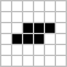

Extra.1 Well...¶
"No." - Doom Slayer
Note
This section is completely optional, and is provided for a bit of nerdy fun. It is by no means essential, feel free to skip it if it doesn't interest you!
Well, someone can, probably. But doom in a dataframe would be kinda hard to play, so let's try something simpler. Conway's Game of Life is a notorious Cellular Automaton that we could perhaps implement with a plugin. For science, of course.

Jokes aside, life allows us to show how a plugin can access elements in both neighbouring rows and columns for each element. With a little bit of extra Python, we can display things in an almost pretty manner.
Note
For this tutorial, we'll assume you created a new plugin from the
cookiecutter template and named it game_of_life
(these steps aren't shown here, since they were already covered at the
very beginning of this series).
In this section we'll cover the developer side of the plugin (both Python and Rust). In the next section we'll show how a user can import and use what we developed here.
The Python side¶
Let's take a look at what we'll implement first, in game_of_life/__init__.py:
import fileinput
from collections import OrderedDict
from itertools import tee, islice
from os import PathLike
from pathlib import Path
from typing import Iterable, Any
import polars as pl
from polars._typing import IntoExprColumn
from polars.plugins import register_plugin_function
# Parse a board from a file or stdin
def parse_board(ifile: str | ...) -> list[list[int]]: ...
# Transpose a list of lists
def _transpose(board: list[list[int]]) -> list[list[int]]: ...
# Creates a DataFrame from a list of lists
def board_to_df(board: list[list[int]]) -> pl.DataFrame: ...
# Helper function to help us deal with corner cases
def _nwise_wrapping(iterable: Iterable[Any], n: int): ...
# Advance the simulation by n steps
def step(df: pl.DataFrame, n: int = 1): ...
# Register our plugin
def life_step(left: IntoExprColumn, mid: IntoExprColumn, right: IntoExprColumn) -> pl.Expr: ...
Starting with the function to parse a board from a file or stdin:
def parse_board(
ifile: (
str
| bytes
| PathLike[str]
| PathLike[bytes]
| Iterable[str | bytes | PathLike[str] | PathLike[bytes]]
),
) -> list[list[int]]:
"""
Converts a board in a file containing only 0s and 1s, e.g.::
0010
0100
into:
[[0010],[0100]]
"""
return [
[c for ch in ln if (c := int(ch)) in [0, 1]]
for line in fileinput.input(ifile)
if len(ln := line.strip()) > 0
]
Next, we have transpose. Why do we need it, anyway? Because the way a dataframe reads our list of lists is counter-intuitive when constructing it from a dict comprehension. If we start with an input board like:
without transpose, we'd end up with:
>>> import polars as pl
>>> board = [[0,0,0,0],[1,1,1,1]]
>>> pl.DataFrame({f"c{idx}": row for idx, row in enumerate(board)})
shape: (4, 2)
┌─────┬─────┐
│ c0 ┆ c1 │
│ --- ┆ --- │
│ i64 ┆ i64 │
╞═════╪═════╡
│ 0 ┆ 1 │
│ 0 ┆ 1 │
│ 0 ┆ 1 │
│ 0 ┆ 1 │
└─────┴─────┘
Not what we expected visually, so we transpose the initial board to have the resulting dataframe match it.
def _transpose(board: list[list[int]]) -> list[list[int]]:
return [[row[idx] for row in board] for idx in range(len(board[0]))]
Next one is board_to_df, which calls _transpose and constructs the DataFrame in a similar way to the example above.
The padding detail is just to avoid columns with larger names than others, feel free to ignore it:
def board_to_df(board: list[list[int]]) -> pl.DataFrame:
"""
Converts a list of lists of integers (0s and 1s) to a Polars DataFrame.
The inner lists must have the same length.
"""
# This is done because each row will become a column - the user likely
# expects a dataframe that *visually* matches the input file
board = _transpose(board)
padding_len = len(str(len(board) - 1))
board_t_dict = {f"{idx:0{padding_len}}": row for idx, row in enumerate(board)}
return pl.DataFrame(
board_t_dict,
)
Let's skip _nwise_wrapping and step for now and jump straight to the last function - we'll return to the two we skipped soon:
Note
Don't forget to read the comments!
def life_step(left: IntoExprColumn, mid: IntoExprColumn, right: IntoExprColumn) -> pl.Expr:
"""
This is the function that registers the polars plugin. To use it directly,
data must be in the correct format. An interesting way to do so is to use
the same column names as the original data frame, so the resulting df will
have the same shape. See how this is done in the `step(df, n)` function.
"""
return register_plugin_function(
args=[left, mid, right],
plugin_path=LIB,
function_name="life_step",
is_elementwise=False,
)
Ok, plugin registered. How do we use it? We create columns in step with with_columns.
And we do so in a way that the new columns will have the exact name as the previously existing ones, so they're overridden.
But wait, there's something we didn't talk about. What happens at the border of the board (both vertically and horizontally)? Do we stop the simulation from propagating there, do we wrap around, or something else? Many implementations stop the simulation at the border, so let's do it differently, let's wrap around!
Wait, why are we talking about this here - isn't this a concern to be solved by our plugin in Rust?
Yes, but Python-land is where we name our columns.
So in order to have that nice overriding behavior, we need to address it here.
This is also a hint at what the mysterious _nwise_wrapping function does:
def _nwise_wrapping(iterable: Iterable[Any], n: int):
"""
Returns overlapping n-tuples from an iterable, wrapping around. This means
the result will have the same length as `iterable`. It also means the first
element(s) will include elements from the end of the iterable, and
likewise, the last element(s) will include elements from the start, e.g.::
fn('ABCDE', 3) -> 'EAB', 'ABC', 'BCD', 'CDE', 'DEA'
"""
elements = list(iterable)
to_be_wrapped = elements[-(n - 2) :] + elements + elements[: n - 2]
iterators = tee(to_be_wrapped, n)
return [
list(z) for z in zip(*(islice(it, i, None) for i, it in enumerate(iterators)))
]
The implementation might look a bit complicated, but the docstring should clarify its goal.
Now we're only missing step, which takes a DataFrame already in the expected format and returns another DataFrame with our plugin applied n times to it:
def step(df: pl.DataFrame, n: int = 1):
"""
Takes a df and returns df.with_columns(...) corresponding to `n` advanced
steps in the simulation
"""
padding_len = len(str(df.width - 1))
# colnums: [['{n-1}', '00', '01'], ['00', '01', '02'], ['01', '02', '03'], ... ]
colnums = _nwise_wrapping([f"{idx:0{padding_len}}" for idx in range(df.width)], 3)
# colnames: ['00', '01', '02', '03', ... , '{n-1}']
colnames = [cols[1] for cols in colnums]
# colvalues: [<Expr ['col("00")./home/…'] at 0x7B7C253C7E60>, ... ]
colvalues = [life_step(*tuple(cols)) for cols in colnums]
for _ in range(n):
df = df.with_columns(**OrderedDict(zip(colnames, colvalues)))
return df
We're done with the Python side of things.
And if you're wondering: "what plugin did we actually register with life_step?" -
you're totally right to be confused, we didn't touch Rust yet!
Why did we leave it for last?
Because surprisingly, it's much simpler than the Python side, and much shorter too.
Let's get rusty¶
What do we need to do?
For each element, we need to look at the the sum of the 8 neighbours, then apply the rule to decide whether the element will be dead or alive in the next iteration.
Here's what our entire src/expressions.rs looks like:
#![allow(clippy::unused_unit)]
use polars::export::arrow::legacy::utils::CustomIterTools;
use polars::prelude::*;
use pyo3_polars::derive::polars_expr;
#[polars_expr(output_type=Int64)]
fn life_step(inputs: &[Series]) -> PolarsResult<Series> {
let (ca_lf, ca_curr, ca_rt) = (inputs[0].i64()?, inputs[1].i64()?, inputs[2].i64()?);
/*
We're "counting" on the user not to append or modify the DataFrame created
from the board file.
In general, this might sound insane, but for our Game of Life, this is not
so unreasonable.
*/
let lf = ca_lf
.cont_slice()
.expect("Expected input to be contiguous (in a single chunk)");
let mid = ca_curr
.cont_slice()
.expect("Expected input to be contiguous (in a single chunk)");
let rt = ca_rt
.cont_slice()
.expect("Expected input to be contiguous (in a single chunk)");
let len = lf.len();
let out: Int64Chunked = mid
.iter()
.enumerate()
.map(|(idx, val)| {
// Neighbours above
let prev_row = if 0 == idx {
lf[len - 1] + mid[len - 1] + rt[len - 1]
} else {
lf[idx - 1] + mid[idx - 1] + rt[idx - 1]
};
// Curr row does not include cell in the middle,
// a cell is not a neighbour of itself
let curr_row = lf[idx] + rt[idx];
// Neighbours below
let next_row = if len - 1 == idx {
lf[0] + mid[0] + rt[0]
} else {
lf[idx + 1] + mid[idx + 1] + rt[idx + 1]
};
// Life logic
Some(match (val, prev_row + curr_row + next_row) {
(1, 2) | (1, 3) => 1,
(0, 3) => 1,
_ => 0,
})
})
.collect_trusted();
Ok(out.into_series())
}
Awesome, now what? If we ignore tests, as plugin developers, we could say we're done. Nothing's happened yet, so how could we be done? In the next section we'll take a look at how the plugin user would call the functions we made available.